《WEB开发基础》
技术说明及课程总结
技术说明
HTML基本结构及常用标签
HTML的框架frame（店铺后台管理系统）
CSS选择器
CSS进行样式设置
CSS三大定位（右侧固定栏）
CSS动画
JavaScript跳转到新的界面
监控鼠标滑动事件（回到顶部）
JavaScript操作DOM
jQuery判断登录框输入值
jQuery UI界面设置（标签切换）
课程总结
课程充满丰富性，效果明显
提升自己学习的知识
了解了网页的基本架构，基本的网页框架
特别是动画，让我觉得像做PPT动画一样，很有意思
感觉原生js有的操作有点复杂
web设计的灵活性大
具有既视感，能够马上看到效果
入门容易，但是感觉后面的东西还是有一定的难度
一学期的学习感觉收获还是挺大的
能够独立写出一些网页，能够模仿大多数网站
正在进一步学习
查看所有网页步骤
第一步
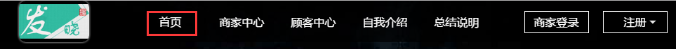
第二步
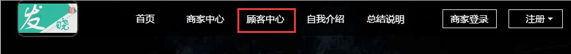
第三步
第四步
第五步
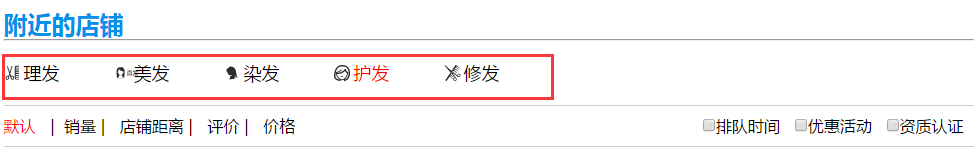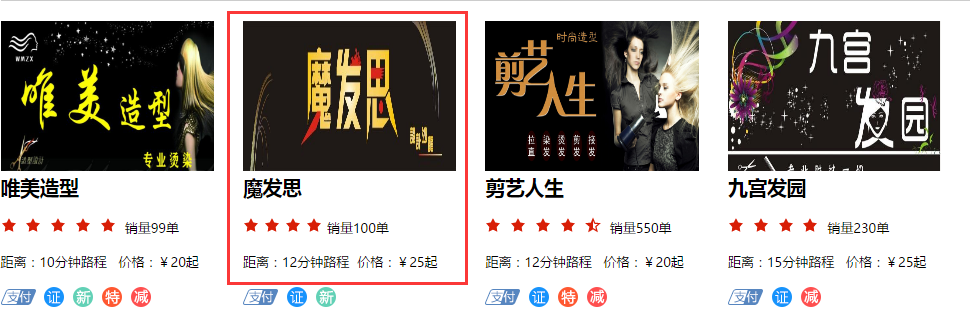
第六步
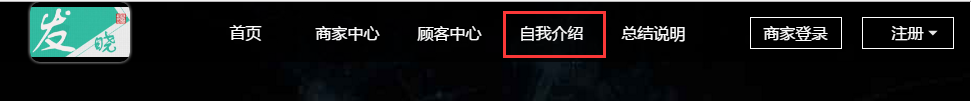
第七步
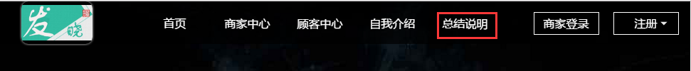
第八步
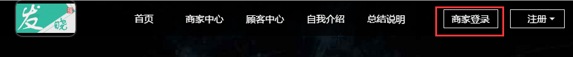
第九步
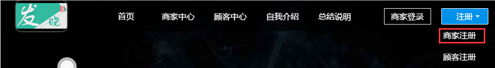
第十步
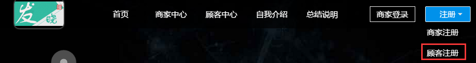
第十一步
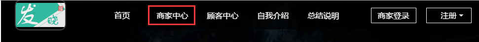
第十二步
第十三步
第十四步
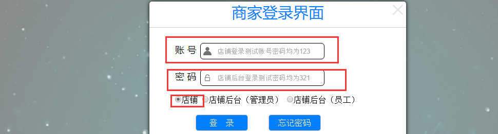
第十五步
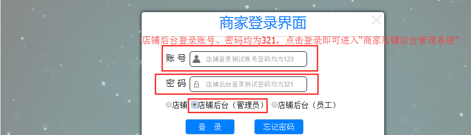
第十六步
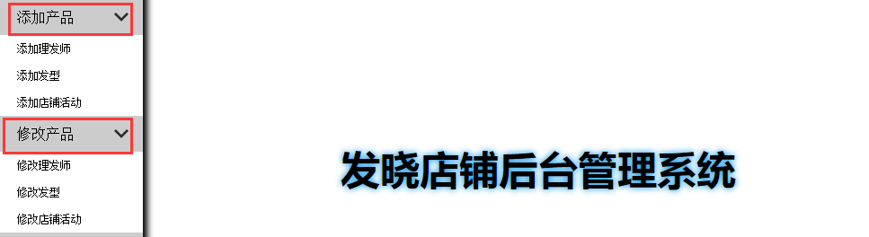
最终解释权归Copyright ©2016 胖小子所有
地址：四川省成都大学
邮箱：cdu.whg@foxmail.com